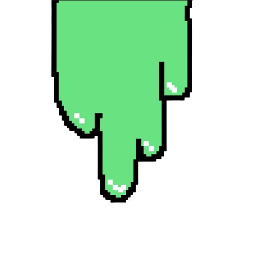

SuperSonic Snails NFTs
Thousands of Combinations
Sliming across the Ethereum BlockChain

Thousands of Snails Growing in Rarity
SuperSonic Snails are art revolutions sliming through the Ethereum Blockchain. SuperSonic Snails are generated via thousands of lines of code making thousands of unique rare digital assets. There are also over 5000 different SuperSonic Snails, so everyone can choose one that they like! The crypto world has been drastically growing over the years, and we believe that it is the future. We believe simple digital assets like SuperSonic Snails will make it easier for regular people to enter the crypto world. Step into a crypto-based future with SuperSonic Snail NFTs!
Created By 2 passionate Programmers who love to Code and Problem Solve